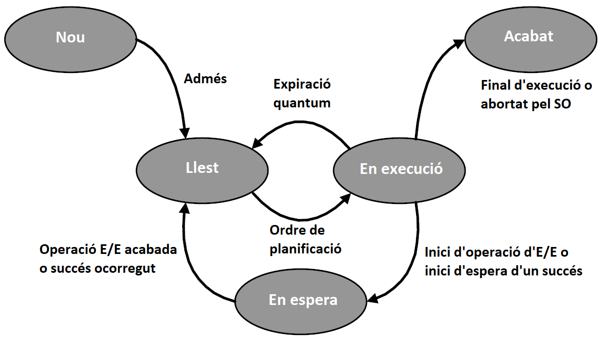

Que un procés estiga en marxa no implica que estiga necessàriament en execució.
Els processos passen per diversos estats durant la seua vida. La següent figura mostra el diagrama d’estats pels quals pot passar un procés. El nom dels estats està emmarcat amb un cercle, les transicions entre els estats amb un arc juntament amb l’acció o esdeveniment que provoca este canvi d’estat.

A continuació s’explica cadascun d’estos estats i transicions.
Estat de nou
En este estat, el sistema operatiu encara no ha carregat el procés en memòria ni l’ha afegit a la llista de processos llestos, però ho té tot preparat per a fer-ho.
Normalment, quan un procés es crea s’admet ràpidament i passa a l’estat de llest, però si hi ha molts processos en marxa i el sistema està sobrecarregat, el sistema operatiu pot decidir retardar la seua admissió amb l’objectiu de no saturar més el sistema.
Tinguem en compte que el processos competixen pels recursos del sistema, principalment RAM i CPU, i que estos són limitats.
La transició de nou a llest es produïx quan el sistema operatiu calcula que hi ha prou recursos perquè el procés s’execute.
Estat de llest
El procés és afegit a la llista de processos llestos on esperarà el seu torn per avançar en la seua execució. En una CPU clàssica (amb un sol nucli) en cada moment només hi ha un procés en execució. La resta de processos romanen en estat llest fins que se'ls concedeix el torn de CPU, moment en què passen a l’estat d’execució.
La transició de llest a execució ocorre quan en el canvi de context es decidix que el procés passarà a executar-se.
Estat d’execució
Les instruccions del procés s’estan executant per la CPU.
La transició d’execució a llest ocorre quan expira el temps de CPU assignat al procés. En eixos moments es preserven en el PCB les dades necessaris per a un futur restabliment i es dona l’oportunitat a un altre procés en avançar en la seua execució.
La transició d’execució a espera ocorre quan el procés necessita d’un recurs per a poder continuar amb la seua execució però este no està disponible, per la qual cosa ha d’esperar-se. Com el temps de CPU és el recurs més valorat no té sentit desaprofitar-lo sense fer res. El que es fa és detindre l’execució del procés i posar-lo en una llista d’espera on es quedarà detingut fins que eixe recurs estiga disponible i el procés puga continuar. Per exemple, un procés pot necessitar carregar alguna cosa des de la memòria secundària, esperar la resposta d’un servidor remot en Internet o que l’usuari polse un tecla. Tot això en temps de processador pot allargar-se molt el que alentiria la resta de processos i en el temps de resposta que percep l’usuari.
Estat d’espera
El procés està en llista d’espera fins que ocórrega l’esdeveniment que està esperant, com per exemple la terminació d’una operació d’E/E.
La transició d’espera a llest ocorre quan l’esdeveniment que havia sol·licitat el procés ha acabat. En eixe moment el procés serà capaç de continuar amb la seua execució, però ha d’esperar el seu torn com la resta. El sistema operatiu passa el procés de la llista de processos en espera a la llista de processos llestos.
Estat d’acabat
El procés s’ha extret del grup de processos executables pel sistema operatiu. Després que un procés es marca com acabat s’alliberen els recursos utilitzats pel procés, per exemple, la memòria.
La transició d’execució a acabat ocorre quan el programa acaba, bé de manera normal perquè per exemple l’usuari o decidix, bé perquè ha hagut algun tipus d’error que impedix continuar la seua execució normal.
Una altra manera gràfica d’expressar els estats pels quals passa un procés en mitjançant l’ús de cues. La següent figura mostra una cua d’entrada, on el nucli s’anota els processos que sol·liciten entrar al sistema. Quan a un procés se li assignen tots els recursos que necessita per executar-se se’l passa de la cua d’entrada a la cua de processos llestos. D’esta cua anirà entrant i eixint dins del mecanisme de concurrència. Si un procés necessita d’algun recurs es desviarà a la cua de processos en espera on es quedarà fins que el tinga, moment en què es passarà de nou a la cua de processos llestos. Quan un procés acaba es passa a la cua de processos finalitzats, de la qual es llevarà quan s’hagen alliberat els recursos que se li havia assignat durant la seua execució.